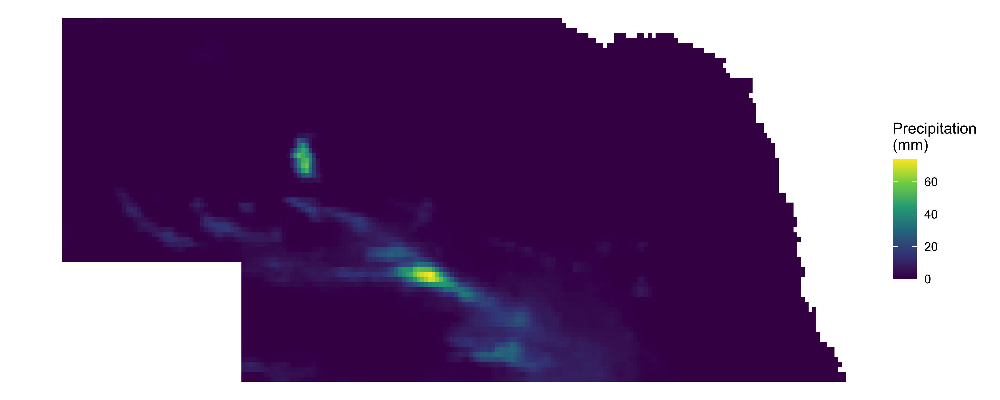
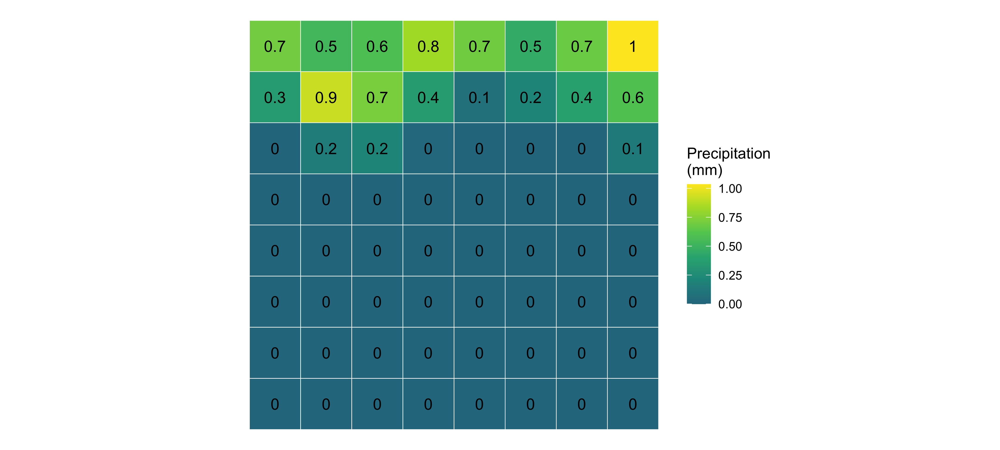

Weather, elevation, soil and satellite images come as raster data: a grid of cells, each with a value. An AI assistant can read any raster format and compute anything on it. What it cannot do is:
Those are your job. So today is about:
terra and tidyterra packages. Install any you do not have yet; it is a one-time step per computer (see the packages slide in Chapter 1). terra reads and computes on rasters; tidyterra lets ggplot2 draw them.here::here() (lecture 03-1).A raster covers a rectangle with a grid of equal cells. Each cell holds one value. What describes the grid:
| Term | What it is |
|---|---|
| Extent | The rectangle the grid covers: lowest and highest x, lowest and highest y |
| Resolution | The width and height of one cell, in the units of the CRS |
| Rows and columns | How many cells down and across |
| CRS | What the x and y numbers mean, as in lecture 09-1 |
| Layers | A raster can hold several grids on the same cells, for example one per day. Each layer has a name. |
A cell with no value (outside the area measured, or a failed reading) holds NA, R’s missing value, if the file says which value means “no data”.
Daily precipitation in millimetres on 1 August 2012, from PRISM (a US weather dataset), for the rectangle around Nebraska. Cells outside Nebraska hold no data.

The 8-by-8 block of cells in the north-west corner of the state, with the value of each cell written in it:

Each square is one cell, about 4 km across, and the number in it is the whole of what the raster knows about that square.
| Always in the file | Sometimes in the file, sometimes only in the documentation |
|---|---|
| The numbers in the cells | Which value means “no data” (often -9999) |
| The extent, resolution, rows, columns | The units (millimetres or inches, degrees C or F) |
| The number of layers | The scale: values stored as whole numbers, such as hundredths of a millimetre, to save space |
| Usually the CRS | What each layer is (which date), beyond a name |
Whatever is not in the file, only you can tell the AI, from the documentation of the data.
| Vector (lecture 09-1) | Raster | |
|---|---|---|
| Stores | separate features, each with a shape | one value per cell of a grid |
| One row or cell is | a county, a well | a 4 km square |
| Typical data | boundaries, locations, roads | weather, elevation, satellite images |
| R package | sf |
terra |
Both need a CRS, and both must share a CRS with any layer they are combined with.
| Part | What it is | Required? |
|---|---|---|
raster <- |
The name the raster will have inside R | Needed to keep the result |
rast |
The reader from terra, for every raster format |
Yes |
"path/to/file" |
Where the file is. c("file1", "file2") reads several files as layers of one raster. |
Yes, the only required input |
A real line, and what R prints for it:
class : SpatRaster
size : 73, 210, 5 (nrow, ncol, nlyr)
resolution : 0.04166667, 0.04166667 (x, y)
extent : -104.0625, -95.3125, 39.97917, 43.02083 (xmin, xmax, ymin, ymax)
coord. ref. : lon/lat NAD83 (EPSG:4269)
source : ne_ppt_2012aug.tif
names : ppt_2012_08_01, ppt_2012_08_02, ppt_2012_08_03, ppt_2012_08_04, ppt_2012_08_05
min values : 0.000, 0.000, 0.00, 0.000, 0.000
max values : 73.808, 40.739, 37.48, 34.864, 18.364 | Line | What it says here |
|---|---|
size |
73 rows, 210 columns, 5 layers |
resolution |
one cell is 0.0417 by 0.0417, in degrees because of the CRS |
extent |
longitude -104.1 to -95.3, latitude 40 to 43: Nebraska |
coord. ref. |
the CRS: longitude and latitude, NAD83 (EPSG 4269) |
names |
one name per layer: here, the date |
min values, max values |
the smallest and largest value in each layer, ignoring no-data cells |
Most of the checks for a raster are on this printout.
The same reader opens all of them:
| Extension | Format | Where you meet it |
|---|---|---|
.tif |
GeoTIFF, the most common | satellite images, elevation, most downloads |
.bil (with .hdr) |
Band interleaved by line | PRISM weather data |
.nc |
netCDF, often many layers | climate data such as gridMET, often one layer per day |
.asc |
ASCII grid, plain text | older data |
The extension picks the format. overwrite = TRUE is needed to replace an existing file. A raster cannot go into a csv without losing the grid.
To check a save, read the file back and compare its CRS, extent, layer names, smallest and largest values and number of missing cells with the original.
Most raster functions take the raster first and return a new raster:
| Function | What it does | Default that matters |
|---|---|---|
raster1 + raster2, raster * 10, log(raster) |
Arithmetic, cell by cell. Rasters must share extent and resolution. | |
raster[[2]] or raster[["name"]] |
One layer | |
global(raster, "mean") |
One number per layer, over all cells | Without na.rm = TRUE, a single NA makes the result NA |
classify(raster, cbind(-9999, NA)) |
Replaces values, here -9999 by NA |
|
aggregate(raster, fact = 5) |
Coarser cells: each 5-by-5 block becomes one cell | Averages the block (fun = "mean") |
resample(raster, template) |
Moves values onto another grid | Interpolates between cells (method = "bilinear") |
project(raster, "EPSG:5070") |
Moves the raster into another CRS | Recomputes every cell value |
crop(), mask(), extract() |
Combine a raster with vector data | Lecture 09-6 |
The total over the five days, cell by cell, and its largest value:
sum() over the layers of one raster adds them cell by cell, giving a raster with one layer.
terra::rast(...): the package name in frontrast(here::here("data", "ppt.tif")): the path built by another functionppt_days$ppt_2012_08_01: one layer by name, like a column of a tableggplot() + geom_spatraster(data = raster): a map of a raster, from tidyterra (lecture 09-3)NA, not a number such as -9999.Raster operations stop with an error when two rasters do not share extent and resolution, or a file does not exist. Conditions 1 to 5 failing gives numbers with no error: the silent failures on the next slide are three of them.
ne_ppt_raw.tif holds the same 1 August 2012 precipitation, stored the way some data providers store it: -9999 in the cells outside Nebraska, and no line in the file saying that -9999 means “no data”.
class : SpatRaster
size : 73, 210, 1 (nrow, ncol, nlyr)
resolution : 0.04166667, 0.04166667 (x, y)
extent : -104.0625, -95.3125, 39.97917, 43.02083 (xmin, xmax, ymin, ymax)
coord. ref. : lon/lat NAD83 (EPSG:4269)
source : ne_ppt_raw.tif
name : ppt
min value : -9999
max value : 7381 The average over the cells:
An average daily precipitation of -1547 millimetres, impossible, and no error. 2,580 cells hold -9999 and were averaged with the rest. The printout above shows it: min value: -9999.
The largest value in the same file is 7381. 7,381 millimetres in a day is impossible: the file stores hundredths of a millimetre as whole numbers. Only the documentation says so. Both fixes together, declare -9999 as no data, then divide by 100:
min max mean
ppt 0 73.81 1.627232Now the values run from 0 to 73.8 millimetres, and the average is 1.63 millimetres, the same as the file that declares its no-data value and units.
A small land-cover raster where 1 means corn and 2 means soybean, made coarser by aggregate(), which averages by default:
landcover <- rast(nrows = 4, ncols = 4, xmin = 0, xmax = 4, ymin = 0, ymax = 4,
vals = c(1, 1, 2, 2, 1, 2, 2, 2, 1, 1, 1, 2, 2, 2, 1, 1))
values(aggregate(landcover, fact = 2)) lyr.1
[1,] 1.25
[2,] 2.00
[3,] 1.50
[4,] 1.25Values of 1.25 and 1.5 are neither corn nor soybean, and nothing warns you. For codes, the right rule is the most common value in each block, fun = "modal":
resample() has the same problem when codes are stored as plain numbers: its default, "bilinear", interpolates between neighbouring cells. Tell it method = "near". (If the raster is declared categorical, terra uses "near" itself; aggregate() averages either way.) project(), which moves a raster to another CRS, has the same default and needs the same instruction.
The same way of working as on the slide of this name in lecture 02-1: you ask, the AI writes into your .qmd (Quarto document) with one plain-English sentence above each chunk and renders it to HTML, and you judge the HTML.
A raster’s printout, its value ranges and a quick map are checks you judge by eye. In the HTML they sit next to the code that produced them, and the document records which no-data value and scale you told the AI to use, and why.
Note
Every request that asks for code ends with the same few lines, the closing instructions; the full text is under Recommended requests near the end.
Raster data almost always comes with documentation: a README, a metadata page, a .txt or .xml file next to the data. Find in it:
The printout of rast() reads only the file’s description and, if the file stores them, its smallest and largest values, so it is quick even for a large file. If the printout has no min value line, ask for the range before anything else.
class : SpatRaster
size : 73, 210, 1 (nrow, ncol, nlyr)
resolution : 0.04166667, 0.04166667 (x, y)
extent : -104.0625, -95.3125, 39.97917, 43.02083 (xmin, xmax, ymin, ymax)
coord. ref. : lon/lat NAD83 (EPSG:4269)
source : ne_ppt_raw.tif
name : ppt
min value : -9999
max value : 7381 From this alone: one layer, longitude and latitude around Nebraska, values from -9999 to 7381. Compare that with the documentation before asking for any calculation.
The AI knows every terra function. Your request supplies what it cannot know:
Using an agent in your editor or terminal?
An agent such as Claude Code can open the raster and print it for itself. It still cannot know a scale or a no-data value that is only in the documentation. Write those down before it runs.
A typical reply:
On a file like ne_ppt_raw.tif this prints -1547, with no error: the -9999 cells and the hundredths are both taken at face value.
An example for a precipitation file like the one on the “Silent failures” slide:
In my R project, data/ppt_raw.tif is a GeoTIFF of daily precipitation
on 1 August 2012 around Nebraska, one layer. Its documentation says:
values are hundredths of a millimetre stored as whole numbers, -9999
means no data, and the CRS is NAD83 longitude and latitude (EPSG 4269).
Read it, mark -9999 as missing, and convert the values to millimetres,
in a raster called ppt. Then print the average precipitation over the
cells with data.
Check: the CRS (I expect EPSG 4269), the extent (I expect longitude
between -104 and -95 and latitude between 40 and 43), the smallest and
largest value after conversion (I expect 0 and something below 150 mm),
and the number of missing cells. Draw a quick map of the raster.
Put the code in my Quarto document analysis/weather.qmd, under the
heading "Read the precipitation", as R code chunks. Above each chunk,
write one plain-English sentence saying what it does and why. Build
every path with here::here(); no setwd(), no absolute paths. Print each
check on its own line as "name of check: expected X, got Y". Render the
document to HTML.In the rendered HTML, a sentence, then the chunk it describes.
Read the raster, mark -9999 as missing, and convert hundredths of a millimetre to millimetres.
Print the checks against what was expected, then the average.
rng <- global(ppt, c("min", "max"), na.rm = TRUE)
cat("CRS: expected EPSG 4269, got EPSG", crs(ppt, describe = TRUE)$code, "\n")
cat("longitude: expected -104 to -95, got", round(xmin(ppt), 1), "to", round(xmax(ppt), 1), "\n")
cat("latitude: expected 40 to 43, got", round(ymin(ppt), 1), "to", round(ymax(ppt), 1), "\n")
cat("smallest value: expected 0, got", rng$min, "\n")
cat("largest value: expected below 150, got", rng$max, "\n")
cat("missing cells: expected some (the rectangle reaches outside Nebraska), got", global(ppt, "isNA")[1, 1], "of", ncell(ppt), "\n")
global(ppt, "mean", na.rm = TRUE)crs(ppt, describe = TRUE)$code pulls the EPSG code out of the CRS description. The output is in the next section.
The AI can write the checking code. It cannot know the right answers. Ask for these after reading a raster and after each step that changes its values:
| Ask the AI to print | Catches | What only you can supply | |
|---|---|---|---|
| 1 | the CRS | a missing or wrong CRS | the CRS from the documentation |
| 2 | rows, columns, resolution, number of layers | the wrong file, a layer missing | what the documentation says |
| 3 | the extent | a grid in the wrong place, or in metres when you expected degrees | where the place is |
| 4 | the name of each layer | layers in the wrong order, the wrong dates | which date or variable each layer is |
| 5 | the smallest and largest value of each layer | an undeclared no-data value, a scale not applied, the wrong units | a believable range, in known units |
| 6 | the number of missing (NA) cells |
no-data cells counted as values (zero missing where some should be) | roughly how many cells lie outside the area |
| 7 | a quick map of each layer | anything the numbers did not show | what the pattern should look like |
One sentence at the end of your request:
Print the CRS, the extent, the resolution, the name, smallest and
largest value of each layer, and the number of missing cells, and draw
a quick map of each layer.Better, with what you expect:
What the checking code on the previous slide printed, run on ne_ppt_raw.tif:
CRS: expected EPSG 4269, got EPSG 4269 longitude: expected -104 to -95, got -104.1 to -95.3 latitude: expected 40 to 43, got 40 to 43 smallest value: expected 0, got 0 largest value: expected below 150, got 73.81 missing cells: expected some (the rectangle reaches outside Nebraska), got 2580 of 15330 mean
ppt 1.627232Every check passes. 2,580 of 15,330 cells are missing, about 17%: the rectangle around Nebraska includes parts of other states, and the cells there have no data. Had the -9999 not been declared, this line would say 0, and the smallest value -99.99.
The checks above apply to any raster. Checks from what you know about this variable are stronger:
Using the raster ppt_days with five daily layers, print the smallest value
of each layer (I expect 0 or more), and for each pair of consecutive
days, whether the two layers are identical (I expect not).
Put the code in my Quarto document analysis/weather.qmd, under the
heading "Check against the data", as R code chunks. Above each chunk,
write one plain-English sentence saying what it does and why. Build
every path with here::here(); no setwd(), no absolute paths. Print each
check on its own line as "name of check: expected X, got Y". Render the
document to HTML.The AI’s code, and what it printed:
smallest value per day: expected 0 or more, got 0 0 0 0 0 ppt_2012_08_01 and ppt_2012_08_02 identical: expected FALSE, got FALSE
ppt_2012_08_02 and ppt_2012_08_03 identical: expected FALSE, got FALSE
ppt_2012_08_03 and ppt_2012_08_04 identical: expected FALSE, got FALSE
ppt_2012_08_04 and ppt_2012_08_05 identical: expected FALSE, got FALSE All pass. When a check like this fails, the code is usually not the problem: the file is. Stop, and ask whoever produced it.
A student has a land-cover raster, where 1 means corn, 2 soybean and 3 pasture, stored as plain numbers, and a weather raster on a different grid. They asked an AI to “put the land cover on the weather grid”, and got this:
A. What does each line do?
B. Which line gives a wrong result without an error, and what will the result contain?
C. Which check would catch it?
D. What should the request have said?
A. Reads the land-cover raster; reads the weather raster; moves the land-cover values onto the weather grid.
B. Line 3. Without a method, resample() interpolates between neighbouring cells ("bilinear"). Codes are not amounts, so the result holds values between the codes. On the 4-by-4 land-cover raster from the “Silent failures” slide, moved to a shifted 3-by-3 grid, it gives values such as 1.09, 1.21, 1.3: neither corn nor soybean.
C. The list of distinct values before and after. Before: 1, 2 and 3. After: many values that are not whole numbers. The smallest and largest value would not catch it, because every interpolated value lies between them.
D. That the values are codes that must not be averaged or interpolated, so that each new cell takes the value of the nearest old cell (method = "near"), and to print the distinct values before and after.
Copy one, then replace every <...> with what you found in the data’s documentation and printout. Every request for code ends with the closing instructions.
The lines that end every request for code. Replace the two blanks; leave “expected X, got Y” as it is, because it tells the AI how to print each check:
Put the code in my Quarto document <path to your .qmd>, under the
heading "<heading>", as R code chunks. Above each chunk, write one
plain-English sentence saying what it does and why. Build every path
with here::here(); no setwd(), no absolute paths. Print each check on
its own line as "name of check: expected X, got Y". Render the document
to HTML.A chat assistant cannot render: paste its chunks into your .qmd and render it yourself. An agent in your editor or terminal can do every step.
In my R project, <path to the file> is a <format> file of <variable>
for <place and dates>, with <number> layers, one per <what each layer
is>. Its documentation says: values are <units, and the scale if
any>, <no-data value> means no data, and the CRS is <CRS name, EPSG
code>.
Read it into a raster called <raster name>, mark <no-data value> as
missing, and convert the values to <units>. Name the layers <names>.
Check: the CRS (I expect EPSG <code>), the extent (I expect <west> to
<east> and <south> to <north>, in the units of the CRS), the name of
each layer, the smallest and largest value of each layer (I expect
<lowest> to <highest> <units>), and the number of missing cells. Draw
a quick map of each layer.
Put the code in my Quarto document <path to your .qmd>, under the
heading "<heading>", as R code chunks. Above each chunk, write one
plain-English sentence saying what it does and why. Build every path
with here::here(); no setwd(), no absolute paths. Print each check on
its own line as "name of check: expected X, got Y". Render the document
to HTML.The raster <raster name> holds <variable>, which is <an amount that can
be averaged, or a code that cannot, such as land cover>. Make it
<coarser by a factor of <number>, or match the grid of <other raster>>.
Use a rule suited to <amounts or codes>, and say which rule you used
and why.
Check: the resolution and extent before and after, and the smallest and
largest value before and after (for codes, the list of distinct values
before and after; I expect the same codes).
Put the code in my Quarto document <path to your .qmd>, under the
heading "<heading>", as R code chunks. Above each chunk, write one
plain-English sentence saying what it does and why. Build every path
with here::here(); no setwd(), no absolute paths. Print each check on
its own line as "name of check: expected X, got Y". Render the document
to HTML.Explain this R code to me. For each line, write one plain-English
sentence. Then list:
1. any line that would only work on the computer it was written on
2. which value is treated as "no data", and in which units the values
end up
3. any line that could give a wrong result without an error, and which
check would reveal it
<paste the code here>| You need to understand | The AI can write |
|---|---|
| What a raster is: extent, resolution, CRS, layers | rast() and the reading of any format |
| What the cell values mean: units, scale, no-data value, from the documentation | classify(), the conversion |
| What each layer is | Naming and selecting layers |
| Whether a value is an amount or a code, and so how it may be combined | aggregate(), resample() with the right rule |
| What believable values are for your variable and place | The checking code |
Every raster: read its documentation and write down units, scale, no-data value, CRS and a believable range. Print the raster before computing anything. Ask the AI to write the code and the checks into your .qmd. Render it, and judge the HTML against what you wrote down.